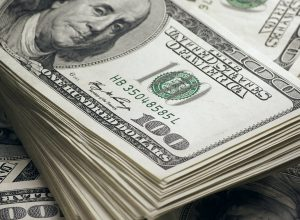

Weak Dollar, Stimulus Optimism Driving Gold
Gold futures closed higher thanks to US Dollar weakness and optimism that a coronavirus assistance program will be passed prior to the US presidential election in less than two weeks.This enhanced gold ‘s appeal as a hedge against inflation.At the same time, copper futures prices hit their highest closing level in more than two years.
The rise in copper futures was driven by China’s strong demand outlook.The price of gold futures for December delivery on the New York Mercantile Exchange rose $3.70, to close at $1,915.40 per ounce, an increase of 0.2%, after the contract also closed up 0.3% in Monday’s trading.December copper futures prices rose 6 cents, or 2%, the highest closing price since June 2018.
Industry experts said that the rise in US Treasury yields may be related to the advancement of negotiations by lawmakers, which may push the price of gold down.However, with the support of greater financial assistance measures, the long-term prospects of gold prices are expected to remain bullish.
The 10-year U.S. Treasury bond yield rose by more than 2 basis points, reaching 0.78%.Market participants attributed part of the increase to investors’ expectations that government spending would increase.Since gold is a non-interest-bearing asset, like other commodities, the rise in the yield of government bonds is a negative factor for gold prices.
In terms of economic data, the seasonally adjusted rate of new housing starts in the United States in September was 1.42 million households, an increase of 1.9% from the previous monthly reduction.After the release of this data, the price of gold partially retreated the previous decline.
At the same time, Moderna Inc.Chief Executive Stéphane Bancel said on Monday that if the trial drug tests go well, the US federal government may authorize the emergency use of its new coronavirus vaccine candidate by December.
Prior to this, Pfizer (NYSE:PFE) stated that antibody treatments against this deadly disease may receive a similar authorization before November, or even before the end of this month.
Since the end of last year, the new coronavirus epidemic has infected about 40 million people worldwide, which often prompts some investors to sell gold.
However, gold bulls pointed out that the expected increase in government balance sheets and the low interest rates prevailing in most parts of developed countries are reasons for continued optimism about gold and silver.Recently, the acceleration of the spread of the new coronavirus in Europe has supported the demand for gold to a certain extent.
The market’s opposition is between former U.S. Vice President and Democratic candidate, Joe Biden, and current President, Republican Donald Trump.The results of the general election and the market reaction were worried, and they also played a role in supporting gold prices.
Naeem Aslam, AvaTrade’s chief market analyst, wrote in a research report, 'there is just too much uncertainty concerning the U.S. elections and coronavirus, which are keeping traders interested in gold prices.'
In addition, the US dollar exchange rate fell sharply on Tuesday, supporting the price of gold.As of the close of the gold futures market on Tuesday, the Intercontinental Exchange (ICE) U.S. dollar index , which tracks changes in the exchange rate of the U.S. dollar against six major international currencies, fell 0.4%.
Under normal circumstances, a fall in the exchange rate of the U.S. dollar will cause the prices of dollar-denominated commodity futures, such as gold and crude oil, to rise.Investors holding other currencies will have lower costs for buying these commodities.
[bsa_pro_ad_space id=4]
Posted On: 2020-10-21T00:00:00
Posted By: Benedict Kasigara




Content Date: 2020-10-21
Download Date: 2021-07-09
Document ID: L0C04E2CA